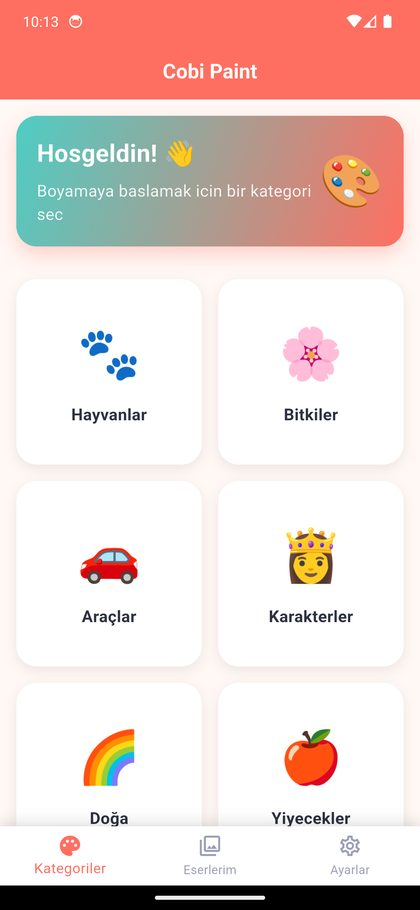
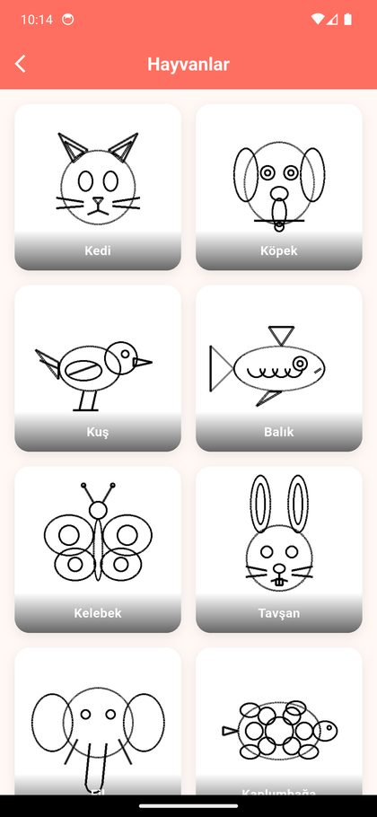
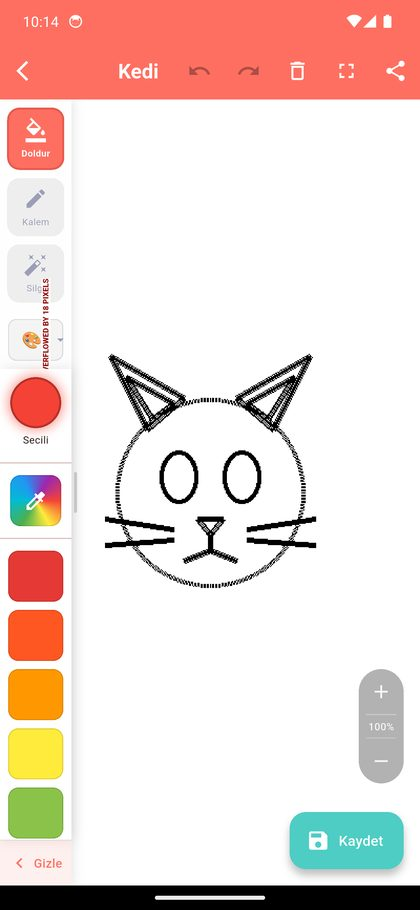
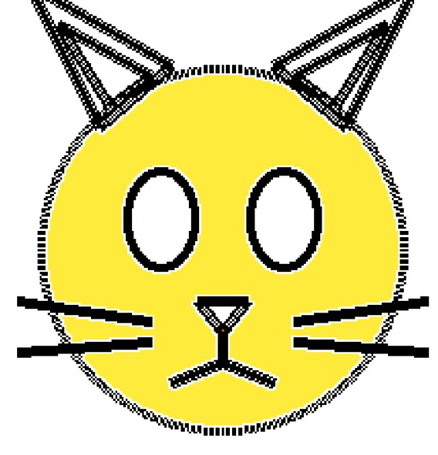
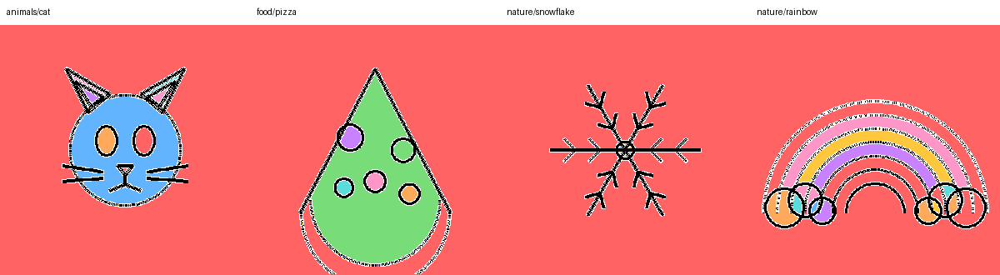
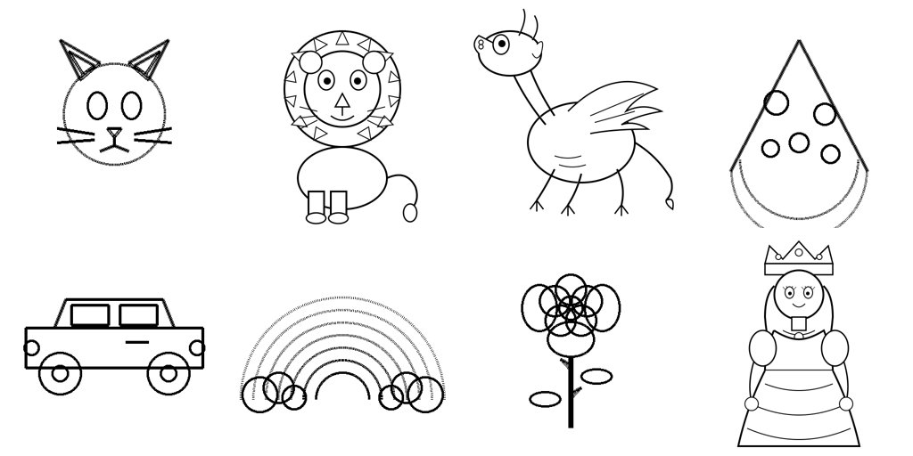
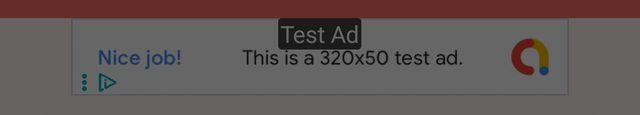

Faz 0 ve Faz 1 bitti; Faz 2, 3, 4 ve 5'in kod tarafı büyük ölçüde bitti: 201 profesyonel sayfa, seviyeler, serbest çizim, kutlama, ipucu, dilden bağımsız kapı ve bayrak arkasında Tam Sürüm kilidi. Kalan işlerin çoğu mağaza adımları ve senin kararların. Gecenin ayrıntısı gece raporunda, UX araştırması ve Apple denetimi UX raporunda.
| Faz | Durum | Yapılan | Kalan |
|---|---|---|---|
| 0 · Zemin | Bitti | Firebase, reklam, satın alma kodu ve OpenCV çıktı (f3c362e). | Android release keystore yedeği (senin işin). |
| 1 · Motor | Bitti | Jest durum makinesi; bölge etiket haritası (sayfa başına 7–39 ms, isolate, disk önbelleği); renk tablosu, 100 adımlık geri al, kayıt şeması v2, eski kayıtların taşınması, otomatik kayıt; katmanlı çizici (a94e631, be8272b, 7eadb40). | Uygulamanın tamamını açan entegrasyon testi. |
| 2 · Fırça | Bitti | Çizginin içinde kalan keçeli kalem, silgi, Minik/Büyük modu, Büyük'te 3 fırça boyu; serbest çizim sayfası (Çiz kartı); artımlı pişen fırça katmanı; gökkuşağı, pastel, sprey, simli ve neon fırçalar (tek düğmede döngü, menü yok). | Kurşun kalem yapılmadı: parmakta basınç yok, Büyük'teki ince keçeli kalem aynı işi görüyor. |
| 3 · İçerik ve tasarım | Kısmen | Bütün ekranlar 3 yaş ölçütüyle yeniden yapıldı; Fluent UI Emoji'den üretilmiş 201 sayfa, 3 seviye ve seviyeye göre sıralama (30b846a); bitiş kutlaması, hareketsizlik ipucu, eser duvarı; sayfa denetimi testi; cobi-toddler-ux skill'i; 10 dil taslağı (lib/l10n/drafts). | İllüstratör sahneleri (3. seviye), yazı tipleri, ikon seti, maskot pozları, ses klipleri (tool/voice/README.md). |
| 4 · Uyum ve gelir | Kod bitti | Dilden bağımsız ebeveyn kapısı ve Ebeveynler alanı; PrivacyInfo.xcprivacy; HIG denetimi: 18 maddenin 12'si uyumlu, 1'i gerekçeli sapma; gizlilik politikası ve mağaza metni; Tam Sürüm kilidinin kodu bayrak arkasında, sahte mağazayla testli. | Mağaza ürünü com.cobi.paint.full ve COBI_IAP bayrağının açılması; Google Play kaydı; Education kategorisi; DSA ve vergi adımları; docs/ yalnız yeni sürümle; Xcode 26. |
| 5 · Keyif | Kısmen | Bitiş kutlaması, hareketsizlik ipucu, eser duvarı, sesli adlar için altyapı, serbest sayfada ayna çizimi, 16 çıkartma, Android'de galeriye kayıt ve yazdırma (kapı arkasında), Büyük'te sistem geri al (iPad üç parmak jestleri, Cmd-Z). | Ses kayıtları, sezon temaları. Fotoğraftan boyama kurul vetosuyla kapandı. |
Kalite: flutter analyze temiz, 90 test geçiyor. iOS simülatör ve Android derlemeleri geçiyor. Emülatörde dolgu, fırça, silgi, otomatik kayıt, kapı, ebeveyn alanı, yatay düzen ve %200 metin denendi.
Uygulama yamalarla düzelmez. Boyama motorunu ve boyama sayfalarını baştan kurmanı öneriyorum. Ekranların görsel dili de yenilenmeli. Mevcut uygulamadan kategori yapısı, ses dosyaları, uygulama ikonu ve maskot kalabilir.
Listener üstünde kendi jest durum makinesi.perfect_freehand ile vektör çizgi üretecek. Çizgi resim her zaman en üst katmanda kalacak.Her satırda senin şikâyetin, kodda doğruladığım ya da ölçtüğüm neden ve çözümün yer aldığı faz var.
| Şikâyet | Doğrulanmış neden | Çözüm | Faz |
|---|---|---|---|
| Tıklamalar kötü | Dolgu onTapUp ile tetikleniyor ve ölçek tanıyıcısıyla yarışıyor (coloring_canvas.dart:213-313). Parmak 18 mantıksal pikselden (kTouchSlop) fazla kayarsa dokunma düşüyor. Çift dokunma kontrolü ilk dokunuşta dolgu yapıyor, ikincide yakınlaştırıyor. Ses servisi her çalışta dosyayı yeniden yüklüyor (sound_service.dart:60-66). |
Jest durum makinesi: parmak 10 lp'den az hareketle ve 250 ms içinde kalkarsa dokunma sayılır. Çift dokunmayla yakınlaştırma kalkar. Sesler önceden yüklenir. | 1 |
| İki parmakla yakınlaştırma kötü | Her karede setScale ve setOffset ayrı ayrı notifyListeners çağırıyor (coloring_screen.dart:408-409). Yaklaşık 10 Consumer karede iki kez yeniden kuruluyor. Dama tahtası arka planı her karede hücre hücre drawRect ile çiziliyor. RepaintBoundary yok. Butonlar 5×'te, jest 10×'te duruyor. Dolgu modunda yakınken tek parmakla kaydırma yok. Kaydırmada atalet (fling) yok. |
TransformationController yalnız tuvali yeniden boyar. Geri kalan widget'lar Selector ile yalnız kendi verisini dinler. 1–8× tek sınır olur. Fling eklenir. | 1 |
| Kazara çizgi | İkinci parmak inince Flutter ScaleGestureRecognizer._reconfigure önce onEnd çağırıyor. Uygulama burada yarım çizgiyi kaydediyor (_finishStroke). Tek parmakta onStart ancak 36 lp (kPanSlop) hareketten sonra geliyor; çizginin ilk 36 lp'si kayboluyor. İkisini de Flutter 3.38.3 kaynağında doğruladım. |
"Bekleme" durumu: çizgi ekranda görünür ama 120 ms ya da 8 lp hareket dolmadan kaydedilmez. Bu sürede ikinci parmak gelirse çizgi atılır. | 1 |
| Boya taşıyor | (1) Dolgu 8 yönlü komşuluk kullanıyor; 1 piksellik çapraz basamaklardan sızıyor. Sızan resim sayısı benim ölçümümde 7, motor ajanının ölçümünde 14 (eşik farkı). (2) 45 resmi üreten tool/generate_sample_images.dart daireyi 360 noktayla çiziyor (satır 1681-1692). Yarıçap büyüyünce kontur noktalı kalıyor. Gökkuşağının çizgisi 509 ayrı parçadan oluşuyor. (3) 14 resimde arka plan bölgesi resmin %85'inden fazlası; kar tanesinde boyanacak bölge yok. |
4 yönlü komşulukla bölge etiket haritası. Resim başına boşluk kapatma ayarı (gapPx). Yeni, kapalı konturlu vektör çizimler. Her derlemede çalışan resim doğrulayıcı. | 1, 3 |
| Pixel boşlukları | Kenar maskesi Sobel gradyanını da kenar sayıyor. Her çizginin iki yanında 1 piksellik şerit hiç boyanmıyor. Bu şerit resim alanının ortanca %3,2'si, en çok %6,9'u. Noktalı konturların aralarındaki cepler boş kalıyor. Resim FilterQuality.none ile yaklaşık 3,5 kat büyütülüyor, kenarlar tırtıklı görünüyor. |
Etiketler çizgi piksellerinin altına kadar büyütülür, çizgi resim en üstte çizilir. Böylece hale kalmaz. Katmanlarda bilinear filtre kullanılır. Kaynak çözünürlük 2048 piksel olur. | 1, 3 |
| Görseller çirkin | 76 resmin 45'i 400 piksel, 31'i 512 piksel. Resimlerin hepsi kodla üretilmiş, üst üste binen daire ve çizgilerden oluşuyor. Bölge sayısı ortanca 13. Arayüzde başlık ve butonlarda beyaz metin kontrastı 1,6–2,7:1. Metinlerde Türkçe karakter eksik ("Hosgeldin", "Secili"). Boyama ekranında taşma uyarısı görünüyor. | Yeni içerik hattı: SVG kaynak, 2048 px, 200+ sayfa. Yeni tasarım sistemi. | 3 |
| Fırçayla çizim yok | "Kalem" Bresenham daireleriyle resmin içine piksel basıyor; kenar yumuşatması yok. Nokta listesi her noktada kopyalanıyor (O(n²)). Silgi yalnız dokunma noktalarına damga basıyor; hızlı çekişte noktalar kalıyor. | perfect_freehand ile vektör fırça. Ayrı fırça katmanı. "Çizginin içinde kal" seçeneği. Sihirli fırçalar. | 2 |
Ekran görüntülerini Android emülatöründe (Pixel 6 Pro profili, API 34) çalışan debug derlemesinden aldım. Pinch'i test edemedim; adb çok parmaklı dokunma göndermiyor.







Ölçüm, uygulamanın kendi kenar maskesini (gri eşik + Sobel, Otsu ile otomatik eşik) birebir taklit eden bir Dart betiğiyle yapıldı. Tam tablo ekte ve plan/resim-olcumleri.csv dosyasında.
| Ölçü | Değer | Anlamı |
|---|---|---|
| Resim sayısı | 76 | 45'i 400 px, 31'i 512 px. README 6 kategori diyor; her kategoride 12–13 resim var. |
| Bölge sayısı (ortanca) | 13 | En az 1 (kar tanesi), en çok 47 (motosiklet). Rakip uygulamalarda küçük çocuk sayfası 8–15, büyük çocuk sayfası 20–60 bölge öneriliyor. |
| 8 bölgeden az ya da eşit | 23 | Resimlerin üçte biri birkaç dokunuşta bitiyor. |
| Arka plan ≥ %85 | 14 | Ana gövde arka planla birleşmiş ya da çizim çok küçük. |
| Noktalı kontur (≥ 30 siyah parça) | 7 | Gökkuşağı 509, otobüs 104, kurabiye 99, pizza 87, uçak 68, ay 48, kedi 35 parça. |
| Boyanmayan hale şeridi (ortanca) | %3,2 | Resim alanının bu kadarı hiçbir dokunuşla boyanmıyor. En kötüsü gökkuşağında %6,9. |
P0 çökme, veri kaybı ya da mağaza reddi. P1 büyük UX ya da performans sorunu. P2 cila. Satır numaraları bugünkü master içindir. "Kaynak" sütunu bulguyu kimin doğruladığını söyler: ben = kodda ya da emülatörde kendim gördüm, ajan = kod denetimi ajanı okudu.
| # | Sorun | Yer | Çözüm | Faz | Kaynak |
|---|---|---|---|---|---|
| P0-1 | iOS simülatör derlemesi bağlama aşamasında 14 tanımsız GRPC_OBJ_* sembolüyle kırılıyor. Sembolleri cloud_firestore üzerinden gelen BoringSSL-GRPC 0.0.37 getiriyor (Firebase 12.6.0, Xcode 16.4). | ios/Podfile.lock | Firebase kullanılmıyorsa (P0-8) tamamen çıkar; sorun kendiliğinden kalkar. Kalacaksa pod'ları ve FlutterFire'ı güncelle. | 0 | ben |
| P0-2 | Eserler piksel başına "indeks": renk olarak tek bir SharedPreferences metninde saklanıyor. Dolu bir 512×512 sayfa yaklaşık 4 MB JSON eder. iOS bu boyutta UserDefaults kaydını reddedebilir; bu durumda tüm liste kaybolur (cihazda doğrulanmadı). | coloring_provider.dart:612, storage_service.dart:59-73 | Eser başına klasör: doc.json (bölge renkleri + fırça çizgileri), brush.png, thumb.png. Eski kayıtlar için tek seferlik taşıma. | 1 | ajan + ben |
| P0-3 | Kayıtta mutlak dosya yolu tutuluyor. iOS uygulama konteyner yolu her güncellemede değişir; güncellemeden sonra tüm küçük resimler ve içe aktarılan sayfalar kaybolur. | storage_service.dart:97-115 | Yalnız dosya adını sakla, çalışırken belgeler klasörüne göre çöz. | 1 | ben |
| P0-4 | Kaydetmeden çıkışta eser sessizce kayboluyor. Projede PopScope yok. Emülatörde geri tuşu boyanmış kediyi sormadan kapattı. | coloring_screen.dart:295 | Otomatik kayıt: her işlemden 2 sn sonra, uygulama arka plana geçince ve ekrandan çıkınca. | 1 | ben |
| P0-5 | Çocuk kategorisi uyumsuzlukları: kategori ekranında banner, her 2. kayıtta interstitial reklam. Info.plist'te ATT izni metni (NSUserTrackingUsageDescription). Manifest'te AD_ID, READ_MEDIA_IMAGES ve CAMERA izinleri. Paylaşım, Pro ekranı ve Ayarlar için ebeveyn kapısı yok. PrivacyInfo.xcprivacy yok. | category_screen.dart:100-109, Info.plist:75, AndroidManifest.xml:7,14,20 | Bölüm 10'daki kontrol listesi. | 4 | ben |
| P0-6 | Mağaza metni "Reklam içermez / No ads" diyor, uygulama reklam gösteriyor. | store_listing.md:53,57,101 | Reklam kalkınca metin doğru olur. Kalkmazsa metni düzelt. | 4 | ben |
| P0-7 | Android, iOS reklam birimi kimliklerini kullanıyor; iki platformda kimlikler aynı. | ad_service.dart:27-30 | Reklam kalkarsa konu kapanır. Kalırsa Android için ayrı birim aç. | 4 | ben |
| P0-8 | Firebase yapılandırılmamış: GoogleService-Info.plist ve google-services.json yok. Uygulama açılışta "Failed to load FirebaseOptions" hatası veriyor. Firebase kod yolu da tutarsız: imagePath bir yerde URL, bir yerde Storage yolu. | main.dart, firebase_service.dart:103, category_screen.dart:230 | Karar 2'ye bağlı. Önerim: tamamen çıkar. | 0 | ben (log) |
| P0-9 | Satın alma güvensiz. buyNonConsumable yalnız ödeme sayfasının açıldığını bildiriyor, ama kod bu dönüşte hemen setPro(true) çağırıyor. Kullanıcı iptal etse de Pro olur. Restore sonucu beklenmeden okunuyor. Fiyatlar koda gömülü (₺29,99, ₺149,99). IAP arayüzü şu an TODO ile gizli. | pro_screen.dart:202-206, 225-232 | Satın alma akışını (purchaseStream) dinle, yalnız purchased/restored durumunda Pro aç. Fiyatı mağazadan oku. Yıllık SKU ekle. | 4 | ben + ajan |
| # | Sorun | Yer | Çözüm | Faz |
|---|---|---|---|---|
| P1-1 | Renk durumu Map<int,Color> içinde piksel başına tutuluyor. Undo için 50 tam kopya saklanıyor. Dolgu UI thread'inde çalışıyor. Her değişiklikte tüm katman yeniden kuruluyor. | coloring_provider.dart | Bölge→renk tablosu (Uint32List) ve komut tabanlı undo. | 1 |
| P1-2 | Boyama ekranının sol paneli taşıyor (emülatörde görüldü). Tam ekranda kalem seçiliyken alt satır yaklaşık 459 px'e çıkıyor, sığan genişlik 374 px. iPhone SE'de renk listesine yer kalmıyor (koddan hesap). | coloring_screen.dart:457-528, 1029-1119 | Yeni araç çubuğu düzeni (bölüm 7). | 3 |
| P1-3 | Panel resmin üstüne biniyor. Tuval tam genişlikte, panel üstünde duruyor. | coloring_screen.dart:375 | Tuvalin görünür alanını panelden sonra hesapla. | 3 |
| P1-4 | Doku (texture) üreticisi UI thread'inde çalışıyor; 1024×1024 resimde yaklaşık 550 milyon işlem (ajan hesabı). Doku kayıtta yok, PNG'ye de çıkmıyor. | paint_textures.dart:124-178 | Küçük, tekrarlanan doku resmi ve ImageShader. | 2 |
| P1-5 | Kaydet ve Paylaş UI'ı donduruyor: PNG saf Dart'ta kodlanıyor, sonra küçük resim için tekrar çözülüp kodlanıyor. | image_processing_service.dart:273 | PictureRecorder → toImage → toByteData(png); ağır iş isolate'te. | 1 |
| P1-6 | Tema ya da dil değişince uygulama baştan açılıyor (splash 2 sn, ilk sekme). Varsayılan dil cihaz dilini yok sayıp tr oluyor. | main.dart:65, locale_provider.dart:7 | MaterialApp key'inden tema/dili çıkar. Cihaz dilini varsayılan yap. | 3 |
| P1-7 | Eser yeniden açılınca kalemle çizilen siyah duvarlar geri gelmiyor; dolgu sızıyor. Silgi rengi siliyor ama duvarı bırakıyor. | coloring_provider.dart:296, 552-579 | Yeni belge modeliyle kendiliğinden kalkar. | 1 |
| P1-8 | Fotoğraftan çizgi resim: Canny + 15×15'e kadar 10 kapatma geçişi dokuları birbirine yapıştırıyor. Her kaydırıcı değişikliği yeni isolate başlatıyor; eski sonuç yenisini ezebiliyor. OpenCV Mat'ları serbest bırakılmıyor. | opencv_image_service.dart:77-141, import_screen.dart:86-97 | Karar 3'e bağlı. Tutulursa: debounce + nesil sayacı, posterize + bölge sınırı, küçük bölgeleri at. | 5 |
| P1-9 | Çizgi editöründe undo/redo/temizle ekrana yansımıyor (shouldRepaint aynı listenin uzunluğunu karşılaştırıyor). | drawing_canvas.dart:309-314 | Sürüm sayacıyla repaint. | 5 |
$e) gösteriliyor. Türkçe metinlerde diakritik eksik.coloring_screen.dart:235-252).FileImage yol bazlı önbellek). build içinde existsSync çağrılıyor.usesCleartextTraffic açık.permission_handler, photo_manager, firebase_auth. opencv_dart 2.1.0 Dart 3.10 istiyor, pubspec ^3.0.0 diyor. 18 print(, 22 withOpacity var. Tek test tüm uygulamayı açan bir duman testi; büyük olasılıkla kırık (çalıştırmadım).enhanced_image_service.dart (566 satır), texture_selector.dart, constants.dart.ImageProcessingService içinde createThumbnail dışındaki her şey.ShareService.shareToWhatsApp, shareMultipleImages, shareText.FirebaseService: getImagesForCategory, getImageUrl, getImagesStream, getLastUpdateTime, uploadArtwork. Sonuncusu çocuğun çizimini kullanıcı kimliğiyle sunucuya yüklüyor; gizlilik riski.AppProvider: canImportImage, getArtworkById, shouldShowAd. ColoringProvider: processedImageData, setEdgeThreshold, setGradientThreshold, reset.LineSmoother.decimate, movingAverage; DrawnLine.smoothed, copyWith; LocaleProvider.getLanguageName, getLanguageFlag; UserSettings.language.assets/sounds/backup/, boş assets/fonts/, kökteki index.html ve privacy_policy.html (docs/ ile aynı). Yeni çizimler gelince tool/generate_sample_images.dart.Motor dört parçadan oluşur: jest durum makinesi, bölge oluşturucu, belge (renk tablosu + komut yığını) ve katmanlı çizici. Bölge oluşturucu resim açılırken bir kez çalışır. Dokunma anında flood fill çalışmaz; dolgu tek bir tablo güncellemesidir.
gapPx kadar kalınlaştırılır (varsayılan 0, noktalı resimlerde 2–4). Göz bebeği gibi küçük kapalı alanlar kaybolmaz; bu alanlar kalınlaştırmasız etiketten gelir.Isolate.run içinde yapılır ve sonuç diske yazılır.Tuval girdisinin tamamı Listener ile alınır. Listener gesture arena'ya (Flutter'ın jest tanıyıcılarının yarıştığı mekanizma) girmez; bu yüzden 36 lp gecikme ve yarım çizgi sorunu oluşmaz. InteractiveViewer'ı önermiyorum: başlamış bir çizgiyi iptal edemiyor ve ölçeği tam 1,0 kalan iki parmak sürüklemesini atıyor.
onDoubleTap tek dokunuşu 300 ms bekletir (flutter#110300). Çocuklar art arda dokunduğu için kazara tetiklenir. Yerine pinch ve bir "sığdır" butonu gelir.PointerEvent.pressure ile okunur.FillCmd(etiket, eski, yeni) 12 bayt tutar. Aynı bölgeye aynı renk tekrar dokununca komut yazılmaz.StrokeCmd noktaları Float32List olarak (x, y, basınç; 0–1 aralığında) saklar. Fırça türü, renk, boyut, rastgelelik tohumu ve kırpma etiketi de komutta durur. Aynı tohum aynı glitter desenini üretir; tekrar oynatma ve kayıt aynı sonucu verir.ui.Image kontrol noktası alır. En çok 3 kontrol noktası tutulur. Undo en yakın kontrol noktasından tekrar oynatır.Fırça perfect_freehand 2.5.2 paketiyle (MIT lisans, Ocak 2026) çizginin dış hattını çokgen olarak üretir. Çizgi parmak kalkınca fırça katmanına pişirilir. Çizgi resim fırçanın da üstünde kalır.
| Fırça | Nasıl | Yaş | Paket |
|---|---|---|---|
| Keçeli kalem | perfect_freehand, incelme 0, boyut 12–40 | Hepsi | Ücretsiz |
| Kurşun kalem | İncelme 0,5 + basınç; parmakta basınç taklidi | 6–10 | Ücretsiz |
| Pastel boya | Aynı çokgen + tekrarlanan tane dokusu (ImageShader) | Hepsi | Ücretsiz |
| Sprey | Yolu yeniden örnekle, nokta damgalarını tek drawAtlas ile çiz | Hepsi | Pro |
| Glitter | Parıltı damgaları + hafif ışıltı animasyonu | Hepsi | Pro |
| Gökkuşağı | Renk tonu yay uzunluğuyla döner | Hepsi | Pro |
| Neon | Bulanık dış ışıma + parlak çekirdek | 6–10 | Pro |
| Silgi | Fırça katmanında BlendMode.clear. "Sihirli silgi" dokunulan bölgenin rengini sıfırlar. | Hepsi | Ücretsiz |
"Çizginin içinde kal" seçeneği. Parmak indiği anda o noktanın bölge etiketi okunur. Çizgi yalnız o bölgenin maskesi içinde görünür (saveLayer → çizgi → maske ile BlendMode.dstIn). Minik modunda varsayılan olarak açık olmalı.
Açık karar: Önerdiğim modelde dolgu fırçanın altında kalır. Yani bir bölgeye fırçayla çizip sonra dolgu yaparsan fırça izi durur. Dolgunun fırçayı da silmesini istersen dolgu komutu bölge içini temizler ve undo tekrar oynatma ister (Karar 6).
Eleştiriyi design:design-critique çerçevesiyle emülatör ekran görüntüleri üzerinde yaptım. Uygulamanın arayüzü kullanılabilir durumda, ama çocuk uygulaması gibi değil, genel bir Material uygulaması gibi görünüyor. En büyük fırsat boyama ekranında.
Ana ekranda göz önce mercan başlığa ve gradyanlı karşılama kartına gidiyor. Bu iki alan, asıl iş olan kategori seçimini aşağı itiyor. Kategori ekranında kaba çizimler ve kartların altındaki gri gradyan "bitmemiş" hissi veriyor. Boyama ekranında resim ekranın yaklaşık üçte birini kaplıyor; geri kalanı boş beyaz alan ve araçlar.
| Bulgu | Önem | Öneri |
|---|---|---|
| Boyama ekranında resim küçük. 1× ölçekte sayfa ekran yüksekliğinin yaklaşık %38'ini, kedi çiziminin kendisi %25'ini kaplıyor. | Kritik | Resim ekranın kullanılabilir alanını doldursun. Araçlar resmin üstüne değil, kenarlara yerleşsin. |
| Sol panel taşıyor ve "Silgi" etiketi kesiliyor. | Kritik | Telefonda araçlar altta tek sıra, renkler üstte yatay şerit. Tablette araçlar solda, renkler sağda. |
| Okuma bilmeyen çocuk için araçlar metinle ayrılıyor ("Doldur", "Kalem", "Silgi"). | Orta | Büyük, tanınır ikonlar (kova, keçeli kalem, silgi). Seçili araç fiziksel olarak "kalksın" (ölçek + gölge). Dokununca sesli isim. |
| Kaydet butonu resmin köşesini kapatıyor. Çocuk için "kaydet" kavramı soyut. | Orta | Otomatik kayıt. Kaydet yerine "Bitti" butonu; bitiş ödülünü tetiklesin. |
| Çöp kutusu (tümünü temizle) üst çubukta, undo'nun hemen yanında. | Orta | Temizleme uzun basma ya da onay ister. Undo büyük ve tek dokunuşla erişilebilir kalır. |
| Kategori kartlarında emoji ikonlar platforma göre farklı görünür. | Düşük | Kategori başına özel illüstrasyon. |
| Öğe | Ölçüm | Öneri |
|---|---|---|
Başlıkta beyaz metin (mercan #FF6F61) | 2,73:1 | 4,5:1 hedefi. Koyu metin ya da koyulaştırılmış başlık rengi. |
| Kart etiketi (beyaz, gri gradyan üstünde) | 1,6–2,1:1 | Gradyanı kaldır; etiket kartın altında koyu metin olsun. |
Kaydet butonu (beyaz, turkuaz #4ECDC4) | 1,93:1 | Koyu metin ya da koyu turkuaz. |
| Dokunma hedefleri | 32–56 dp | NN/g küçük çocuklar için 2×2 cm öneriyor (yaklaşık 100+ pt). Renk, araç ve geri butonlarında buna yaklaş. |
| Yazı tipi | Sistem (Roboto) | Başlık Baloo 2, gövde Nunito. İkisinde de ı İ ş Ş ğ Ğ tam var. Fredoka ve Sniglet'te İ ş Ş ğ Ğ eksik; kullanma. |
| Türkçe metin | Diakritik eksik | Tüm metinler ARB dosyasından gelsin. Dart'ın toUpperCase() fonksiyonu Türkçe "i"yi "I" yapar; büyük harfli metinleri ARB'ye hazır yaz. |
| Yön | Görsel dil | Referans | Önerim |
|---|---|---|---|
| A. Dokunsal oyuncak | Yuvarlak "kil" formlar, krem zemin, metinsiz arayüz | Pok Pok, Sago Mini | — |
| B. Canlı çıkartma albümü | Kalın konturlu düz vektör, doygun renkler, esprili maskot | Bimi Boo, Crayon Club | Varsayılan |
| C. Masal kitabı / atölye | Kâğıt dokusu, sakin palet | Lake | 7–10 yaş için "Stüdyo" modu |
Arayüz renkleri düşük doygunlukta kalmalı. Böylece çocuğun boyadığı resim ekranda öne çıkar. Boya paleti arayüz renklerinden ayrı tutulur: varsayılan 12–16 renk, "daha fazla" ile genişler.
Yeni sayfalar SVG kaynaktan üretilir ve her derlemede otomatik doğrulanır. Hedef yayında 200–300 sayfa, sonra ayda 20–30 yeni sayfa ve sezon paketleri. Rakiplerden Crayon Club 1.000+ sayfa sunuyor ve her ay güncelliyor. Lake ayda 12 sayfa ve günlük sayfa çıkarıyor.
Bugünkü ölçüm betiğim (plan/araclar/resim_olcumu.dart, girdi için plan/araclar/png_to_gray.py) bu doğrulayıcının ilk hâlidir. Son hâli her derlemede şunları kontrol eder ve hata varsa derlemeyi kırar:
| Kaynak | Lisans | Risk | Önerim |
|---|---|---|---|
| İllüstratör siparişi | Mali hakların yazılı devri gerekir | Maliyet: basit çizgi resim sayfa başı yaklaşık 15–50 $ (sınırlı kanıt) | Ana kaynak |
| AI eskiz + illüstratör temizliği | Yalnız prompt ile üretilen çıktı ABD'de telif korumasına girmez | Rakip kopyalayabilir. Karakter benzerliği riski (Disney/Universal – Midjourney davası, Haziran 2025) | Yalnız fikir ve eskiz için |
| Openclipart, PublicDomainVectors | CC0 / kamu malı | Kalite değişken; eski yüklemelerin lisansı tek tek kontrol edilmeli | Tamamlayıcı |
| Adobe Stock | Ürünün ana değeri sayfa ise muhtemelen Extended lisans | Paylaş/dışa aktar özelliği "bağımsız dosya dağıtımı" sayılabilir | Önermiyorum |
| Etsy, Creative Fabrica, KDP paketleri | Uygulama içi kullanım belirsiz ya da yasak | Yüksek | Kullanma |
Liste, pazar araştırması ajanının 9 rakip uygulama incelemesinden geliyor. Rakiplerde ortak örüntü: reklamsız, çevrimdışı çalışan, bitiş anında ödül veren uygulamalar kazanıyor. Olumsuz yorumların ana nedeni ödeme sonrası kilitli kalan içerik ve çalışmayan Restore.
| Öncelik | Özellik | Neden | Faz |
|---|---|---|---|
| Must | Yeni sayfa kütüphanesi: 200+ sayfa, 30–40'ı ücretsiz | 76 sayfa rakiplerin 100–1.500 sayfasının çok altında | 3 |
| Must | Dolgu hissi: dokunulan noktadan dalga gibi yayılan animasyon, ses, hafif titreşim | Tüm rakiplerin çekirdek deneyimi | 1 |
| Must | Fırçalar: keçeli, pastel, sprey, glitter, gökkuşağı, neon | Bimi Boo, Crayon Club ve Lake'te var | 2 |
| Must | Bitiş ödülü: konfeti, maskotun sevinmesi, çıkartma ödülü | Bimi ve Bini'nin ayırt edici özelliği | 5 |
| Must | Yaş modu. Minik (3–5, varsayılan): 8 renk, kalın çizgi, "çizginin içinde kal" açık, pinch zorunlu değil. Büyük (6–10, ebeveyn kapısının arkasında açılır): zoom, tüm fırçalar. | Birinci ölçüt 3 yaşındaki çocuk. Geniş yaş aralığı rakiplerde de şikâyet nedeni. | 2 |
| Must | Ebeveyn kapısı ve ebeveyn alanı | Mağaza zorunluluğu (bölüm 10) | 4 |
| Must | Sağlam abonelik doğrulama ve Restore | Rakiplerin 1 yıldızlı yorumlarının ana konusu | 4 |
| Should | Çıkartma ve damga | Crayon Club, Crayola | 5 |
| Should | Günün sayfası ve sezon paketleri: 23 Nisan, 29 Ekim, bayramlar, yılbaşı | Türkiye takvimi yerel bir fark yaratır | 5 |
| Should | Sayıyla boyama ve noktadan noktaya (6–10 yaş) | Bimi, Bini, Happy Color | 5 |
| Should | Renk adlarının TR/EN sesli söylenmesi; Türkçe alfabe izleme (ç ğ ı ö ş ü dahil) | Ebeveyn "eğitici" özelliğe ödeme yapıyor | 5 |
| Should | Ayna / kaleydoskop çizimi | Bimi | 5 |
| Should | Fotoğraftan boyama sayfası: cihazda işlenir, ebeveyn kapısı arkasında | Rakiplerde nadir | 5 |
| Nice | Karanlıkta parlayan mod, piksel sanatı, boyamanın hızlandırılmış tekrarı, yazdırma (kapı arkasında) | Crayon Club, Bimi | sonra |
| Nice | AR ile canlandırma, 3B boyama | Quiver; maliyeti yüksek | sonra |
Reklamı tamamen kaldırmanı ve Apple Kids Category'ye girmeni öneriyorum. Apple 1.3 ve 5.1.4 maddeleri çocuk uygulamasında üçüncü taraf reklama ancak reklam kreatiflerinin insan tarafından incelendiği ve bunun belgelendiği durumda izin veriyor. Forum kayıtları AdMob'lu başvuruların bu gerekçeyle reddedildiğini gösteriyor; kayıtlar 2019–2023 tarihli.
| # | Yapılacak | Bugün |
|---|---|---|
| 1 | google_mobile_ads paketini kaldır. Android'de tutulacaksa: RequestConfiguration(maxAdContentRating: G), çocuk işareti, açılışta interstitial yok, bir ekranda tek reklam. | Banner + her 2. kayıtta interstitial |
| 2 | Info.plist'ten NSUserTrackingUsageDescription kaldır. | Var |
| 3 | Manifest'ten AD_ID, READ_MEDIA_IMAGES, CAMERA kaldır. Fotoğraf için sistem photo picker'ı kullan. Reklam SDK'sı kalırsa AD_ID'yi tools:node="remove" ile çıkar. | Var |
| 4 | Ebeveyn kapısı şunların önüne: Pro ekranı ve satın alma, dış linkler (gizlilik politikası, puan ver), paylaşım, Ayarlar, fotoğraf içe aktarma. Kapı yetişkin düzeyinde bir görev olsun ve talimatı sesli versin. | Yok. README "PIN koruması" diyor, ama kodda PIN yok. |
| 5 | Üçüncü taraf analitik ve tanımlayıcı gönderen SDK olmasın. Firebase çıkarsa bu madde kapanır. | Firebase bağımlılığı var |
| 6 | PrivacyInfo.xcprivacy ekle (UserDefaults için gerekçe). | Yok |
| 7 | Kids Category tek yaş bandı ister: 5 ve altı, 6–8 ya da 9–11. Kategoriye girmeyen uygulama adında ve açıklamada "çocuklar için" diyemez (2.3.8). | Karar 4 |
| 8 | Gizlilik politikası ve Türkçe KVKK aydınlatma metni. Fotoğraf ve çizim çocuğa ait kişisel veri sayılır; işlem cihazda kalmalı. | docs/ altında politika var; güncellenmeli |
| 9 | Abonelik ekranı: fiyat mağazadan, süre, deneme süresi, ücretliye geçiş tarihi, iptal yolu, Restore butonu. | Fiyat koda gömülü |
| 10 | Mağaza metnini gerçeğe uydur. | "Reklam içermez" yazıyor |
COPPA değişikliği (uyum tarihi 22 Nisan 2026), Apple'ın yeni yaş anketi ve Texas SB2420 gibi hukuki konuları ajan web'den topladı. Bunlar hukuki görüş değildir; yayından önce bir hukukçuya teyit ettir.
| Ölçüt | Değer |
|---|---|
| Education kategorisi medyan fiyat (RevenueCat) | 9,99 $/ay, 44,99 $/yıl |
| Deneme süresine göre ücretliye dönüşüm | ≤4 gün %25,5 · 5–9 gün %37,4 |
| Rakipler | 6,99–7,99 $/ay, 39,99–59,99 $/yıl. Lifetime: Pok Pok 89,99 $. Bimi TR: ₺399,99/ay, ₺1.999,99/yıl |
cobi_paint_pro_yearly SKU'su eklensin ve 7 günlük denemeyle varsayılan plan olsun. Mevcut aylık ve lifetime kalır.Süreler tek geliştirici ve Claude oturumlarıyla çalışma varsayımına dayanan tahminlerdir. Efor ölçeği: S ≤ 2 gün, M 3–5 gün, L 1–2 hafta.
lib 37 dosya / 12.239 satırdan 26 dosya / 7.395 satıra indi.
GRPC_OBJ_* sembolüyle düşüyordu.Image.asset yerine Image.file).INTERNET, CAMERA, depolama, READ_MEDIA_IMAGES, BILLING, AD_ID kalktı. iOS: kamera, fotoğraf okuma, ATT ve AdMob anahtarları kalktı. Paylaşım menüsündeki "Resmi Kaydet" için NSPhotoLibraryAddUsageDescription kaldı.^3.10.0.unawaited_futures, avoid_dynamic_calls vb.).pubspec kaydı, eski kayıtların yeni modelle okunması, kategori ekranı ve dokunma hedefi rehberi.flutter analyze ve flutter test çalıştırır. Resim doğrulayıcı Faz 3'te eklenecek; bugünkü resimler sızdığı için şimdi eklenirse CI sürekli kırmızı kalır.TransformationController + yalnız tuvali yeniden boyayan yapı. Eşikler 3 yaş için ayarlanır: dolgu modunda 20 lp'ye kadar kayma dokunma sayılır, avuç ve fazla parmak yok sayılır (Ç3–Ç5). Efor: M.gapPx, isolate, disk önbelleği. Bugünkü 76 resimde de çalışır; sızıntıların çoğunu yeni çizimleri beklemeden kapatır. Efor: M.PopScope, göreli dosya yolları (Ç6, Ç7). Servisler enjekte edilebilir hâle gelir; uygulamanın tamamını açan test burada eklenir. Efor: M.RepaintBoundary, Selector. Dolgu animasyonu ve sesi. Efor: M.Reklamın kaldırılması, reklam/kamera/depolama/satın alma izinlerinin temizlenmesi ve eski satın alma kodunun silinmesi 3 yaş ölçütü yüzünden Faz 0'a çekildi.
PrivacyInfo.xcprivacy). Efor: S.Aşağıdaki işler birbirinin dosyasına dokunmaz. Her biri ayrı bir Claude oturumunda, kendi worktree'sinde yürüyebilir.
| İş akışı | Dokunduğu dosyalar | Yardımcı skill/ajan |
|---|---|---|
| Faz 1a Jest | lib/widgets/coloring_canvas.dart (yeni input/ klasörü) | code-review, simplify |
| Faz 1b Bölge oluşturucu | yeni lib/engine/region/, testler | Motor ajanının prototipi (plan/araclar/bolge_prototipi/: 4 yönlü CCL, büyütme, kalınlaştırma), code-review |
| Faz 3 Doğrulayıcı + içerik hattı | tool/, assets/, CI | Bugünkü ölçüm betiği |
| Faz 3 Tasarım sistemi | lib/theme/, yeni lib/ui/ | design:design-system, design:accessibility-review, design:ux-copy (TR/EN çocuk dili) |
| Faz 4 Uyum | yeni ebeveyn kapısı ve satın alma dosyaları, ios/Runner/PrivacyInfo.xcprivacy, store_listing.md, docs/ | security-review; mağaza metni için humanize-text |
Fi.* projelerine özel skill'ler (fi-mobile-code-reviewer, mobile-screen-create vb.) bu projeye uygun değil; Fimple bileşen kataloğunu varsayıyorlar.
Her fazın sonunda yeni ya da değişen her ekran bu listeyle kontrol edilir. Bir madde karşılanmıyorsa iş bitmiş sayılmaz.
| # | Kontrol | Ölçü | İlgili faz |
|---|---|---|---|
| Ç1 | Okuma gerektirmez. Her araç ikon ve dokununca sesli adıyla tanınır. | Metni gizleyince akış hâlâ tamamlanabiliyor | 3 |
| Ç2 | Dokunma alanları kocaman. | Renk, araç, geri al: yaklaşık 2×2 cm (≈100 pt). Hiçbiri 64 pt'nin altında değil. | 3 |
| Ç3 | Pinch ve iki parmak hareketi zorunlu değil. Çift dokunma kullanılmaz. | Minik modunda zoom yok ya da tek büyük butonla | 1, 2 |
| Ç4 | Dokunma toleransı geniş: çocuk dokunurken parmağını kaydırır. | Dolgu modunda 20 lp'ye kadar kayma hâlâ dokunma sayılır | 1 |
| Ç5 | Avuç ve fazladan parmak kazara işlem başlatmaz. | İkinci parmak gelince yarım çizgi atılır; fazla dokunuşlar yok sayılır | 1 |
| Ç6 | Kazara çıkışta iş kaybolmaz. | Geri tuşu, kenardan kaydırma ve arka plana geçişte otomatik kayıt | 1 |
| Ç7 | Geri al her zaman görünür ve tek dokunuşla çalışır. "Tümünü temizle" kazara tetiklenemez. | Temizleme uzun basma ya da ebeveyn onayı ister | 1, 3 |
| Ç8 | Sonuç anında görünür, sesle ve hafif titreşimle onaylanır. | Dokunmadan dolguya 100 ms'nin altında | 1 |
| Ç9 | Çocuk uygulamadan çıkamaz: reklam, dış link, satın alma ekranı yok. Paylaşım, ayarlar ve satın alma ebeveyn kapısının arkasında. | Ebeveyn kapısı dışında hiçbir dokunuş uygulamadan çıkarmıyor | 0 (reklam), 4 |
| Ç10 | Hata durumunda çocuğa metin gösterilmez; görsel ve ses kullanılır. | Ham hata metni ($e) çocuk ekranında yok | 3 |
Kararların 1–6'sını 2 Kasım 2026'da önerildiği gibi onayladın; 4. karar 3 yaş ölçütüyle değişti. 7. sorunun yanıtını 3 Kasım 2026'da buldum.
| # | Karar | Önerim | Neden |
|---|---|---|---|
| 1 | Reklam kalsın mı? | Tamamen kaldır. | Apple Kids Category, mağaza metni ve rakip örüntüsü aynı yönü gösteriyor. Gelir abonelikten gelir. |
| 2 | Firebase kalsın mı? | Tamamen çıkar. | Yapılandırılmamış ve kullanılmıyor. iOS derlemesini kıran gRPC bağımlılığını getiriyor. Çocuk gizliliği yükü getiriyor. Uzaktan içerik gerekirse sonra statik CDN + JSON manifest yeter. |
| 3 | Fotoğraftan boyama (OpenCV) kalsın mı? | Faz 5'e kadar dondur. | Bugünkü sonuç kalitesi düşük. OpenCV kullanılmayan modüllerle birlikte geliyor. Motor yeniden yazılınca bu akış da etiket haritasından yararlanır. |
| 4 | Kids Category yaş bandı | 5 ve altı. Minik modu varsayılan; Büyük modu ebeveyn kapısının arkasındaki bir ayar. | Birinci ölçüt 3 yaşındaki çocuk. İlk önerim 6–8 idi; 2 Kasım 2026'da bu ölçütle değişti. Apple tek bant istiyor. |
| 5 | Sayfa kaynağı ve bütçe | İllüstratör + AI eskiz. | Haklar sende kalır. 200 sayfa × 15–50 $ = yaklaşık 3.000–10.000 $ aralığı (kaba hesap). |
| 6 | Dolgu fırça izini silsin mi? | Hayır, dolgu fırçanın altında kalsın. | Undo basit kalır. Çocuğun çizdiği şey kaybolmaz. |
| 7 | Uygulama şu an mağazada yayında mı? | Evet. Kids Category "Made for Ages 6–8" bandında (id6757766966). | Eski kayıtların taşınmasını bu yüzden yaptım (v1 → v2). Bant onaydan sonra değişmeyebilir; 4. karar için App Review'a sorulmalı. |
coloring_canvas.dart ve coloring_provider.dart satır satır. 76 resmin uygulamanın dolgu mantığıyla ölçümü. Ajan iddialarının kod ve Flutter SDK kaynağında doğrulanması.lib/, platform yapılandırması, bağımlılıklar. Yalnız okudu, derleme yapmadı.design:design-critique çerçevesi (bölüm 7).plan/araclar/: resim ölçüm betiği ve bölge oluşturucu prototipi. Flutter projesinin dışında çalıştırılmalı; proje içinde dart run native asset kancalarına takılıyor. analysis_options.yaml içinde plan/** analiz dışı bırakıldı.adb çok parmak göndermiyor. Emülatörün sistem arayüzü de iki kez yanıt vermedi (host yük ortalaması 23–43). Bu iki konudaki bulgular kod ve SDK kaynağından geliyor.Sütunlar: bölge = 30 pikselden büyük, tek dokunuşla boyanan alan sayısı (uygulamanın 8 yönlü mantığı). 4 yön = aynı ölçüm 4 yönlü komşulukla. arka plan = en büyük bölgenin resim alanına oranı. siyah parça = birbirinden kopuk çizgi parçası sayısı; yüksek değer noktalı kontur demek. hale = hiç boyanmayan kenar şeridinin oranı.
| Resim | px | bölge | 4 yön | arka plan | siyah parça | hale |
|---|---|---|---|---|---|---|
animals/bird | 400 | 11 | 11 | %86 | 5 | %2,3 |
animals/butterfly | 400 | 15 | 15 | %77 | 7 | %3,4 |
animals/cat | 400 | 8 | 8 | %80 | 35 | %3,0 |
animals/dog | 400 | 11 | 11 | %78 | 28 | %3,0 |
animals/dolphin | 512 | 6 | 6 | %81 | 21 | %2,2 |
animals/elephant | 400 | 9 | 9 | %70 | 29 | %3,1 |
animals/fish | 400 | 8 | 6 | %83 | 19 | %2,6 |
animals/giraffe | 512 | 24 | 22 | %75 | 12 | %3,5 |
animals/lion | 512 | 35 | 35 | %67 | 7 | %4,7 |
animals/owl | 512 | 19 | 19 | %64 | 11 | %4,9 |
animals/penguin | 512 | 16 | 16 | %68 | 9 | %3,9 |
animals/rabbit | 400 | 9 | 9 | %79 | 19 | %3,2 |
animals/turtle | 400 | 25 | 25 | %82 | 22 | %3,3 |
characters/astronaut | 512 | 17 | 17 | %77 | 10 | %3,7 |
characters/dragon | 512 | 7 | 7 | %74 | 7 | %3,7 |
characters/fairy | 512 | 16 | 16 | %70 | 12 | %3,9 |
characters/knight | 400 | 19 | 19 | %72 | 5 | %3,6 |
characters/mermaid | 400 | 12 | 12 | %83 | 7 | %2,8 |
characters/ninja | 400 | 13 | 10 | %76 | 5 | %3,4 |
characters/pirate | 400 | 17 | 17 | %76 | 3 | %3,2 |
characters/princess | 512 | 22 | 22 | %66 | 9 | %4,0 |
characters/robot | 400 | 21 | 21 | %68 | 9 | %3,7 |
characters/superhero | 400 | 28 | 28 | %74 | 1 | %4,0 |
characters/unicorn | 512 | 21 | 21 | %66 | 7 | %4,0 |
characters/wizard | 400 | 7 | 7 | %80 | 7 | %3,2 |
food/apple | 400 | 9 | 9 | %78 | 15 | %2,4 |
food/banana | 512 | 6 | 6 | %90 | 3 | %2,1 |
food/cake | 512 | 14 | 14 | %65 | 4 | %3,8 |
food/cookie | 400 | 10 | 10 | %76 | 99 | %2,7 |
food/cupcake | 400 | 20 | 20 | %76 | 1 | %3,3 |
food/donut | 512 | 6 | 6 | %60 | 8 | %3,2 |
food/hamburger | 512 | 22 | 22 | %58 | 19 | %5,2 |
food/icecream | 400 | 12 | 12 | %76 | 3 | %3,3 |
food/lollipop | 400 | 10 | 10 | %80 | 27 | %3,1 |
food/orange | 512 | 11 | 11 | %71 | 6 | %2,7 |
food/pizza | 400 | 8 | 8 | %68 | 87 | %3,2 |
food/strawberry | 512 | 22 | 22 | %72 | 18 | %2,8 |
food/watermelon | 512 | 6 | 6 | %79 | 12 | %2,6 |
nature/cloud | 512 | 7 | 7 | %96 | 9 | %2,0 |
nature/island | 512 | 13 | 13 | %65 | 15 | %4,3 |
nature/lightning | 512 | 8 | 8 | %93 | 11 | %2,8 |
nature/moon | 400 | 4 | 4 | %75 | 48 | %2,8 |
nature/mountain | 400 | 8 | 8 | %66 | 10 | %3,6 |
nature/rainbow | 400 | 17 | 18 | %73 | 509 | %6,9 |
nature/snowflake | 400 | 1 | 1 | %94 | 1 | %2,1 |
nature/star | 400 | 2 | 2 | %87 | 4 | %1,9 |
nature/sun | 400 | 4 | 4 | %87 | 23 | %2,5 |
nature/tornado | 512 | 7 | 7 | %83 | 14 | %3,3 |
nature/volcano | 512 | 18 | 18 | %53 | 11 | %4,3 |
nature/waterfall | 400 | 18 | 18 | %81 | 1 | %2,5 |
nature/wave | 400 | 6 | 6 | %83 | 11 | %5,1 |
plants/cactus | 400 | 20 | 20 | %77 | 2 | %2,4 |
plants/cherry_blossom | 512 | 27 | 27 | %88 | 3 | %3,1 |
plants/clover | 512 | 6 | 6 | %90 | 1 | %2,3 |
plants/daisy | 512 | 16 | 16 | %84 | 6 | %2,8 |
plants/flower | 400 | 20 | 20 | %82 | 3 | %3,0 |
plants/leaf | 400 | 9 | 9 | %84 | 5 | %2,1 |
plants/mushroom | 400 | 8 | 8 | %79 | 16 | %2,4 |
plants/palm | 512 | 11 | 11 | %90 | 2 | %3,1 |
plants/rose | 400 | 25 | 25 | %86 | 3 | %2,5 |
plants/sunflower | 400 | 30 | 30 | %83 | 5 | %3,9 |
plants/tree | 400 | 12 | 9 | %80 | 3 | %2,8 |
plants/tulip | 512 | 5 | 5 | %92 | 2 | %2,3 |
vehicles/ambulance | 512 | 15 | 15 | %82 | 7 | %3,4 |
vehicles/bicycle | 400 | 25 | 19 | %84 | 1 | %3,1 |
vehicles/boat | 400 | 6 | 6 | %79 | 8 | %3,0 |
vehicles/bus | 400 | 19 | 20 | %68 | 104 | %4,1 |
vehicles/car | 400 | 13 | 13 | %75 | 2 | %2,8 |
vehicles/fire_truck | 400 | 8 | 8 | %87 | 18 | %2,3 |
vehicles/helicopter | 512 | 22 | 22 | %77 | 3 | %3,4 |
vehicles/motorcycle | 512 | 47 | 47 | %79 | 4 | %4,2 |
vehicles/plane | 400 | 13 | 13 | %86 | 68 | %2,7 |
vehicles/rocket | 400 | 10 | 10 | %83 | 3 | %2,4 |
vehicles/submarine | 512 | 26 | 26 | %75 | 11 | %3,3 |
vehicles/tractor | 400 | 15 | 15 | %71 | 7 | %3,4 |
vehicles/train | 400 | 15 | 15 | %71 | 7 | %3,4 |